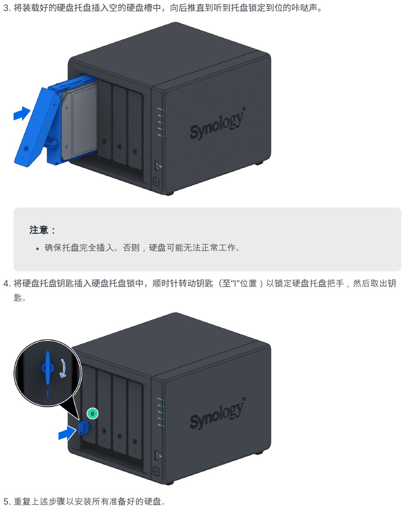
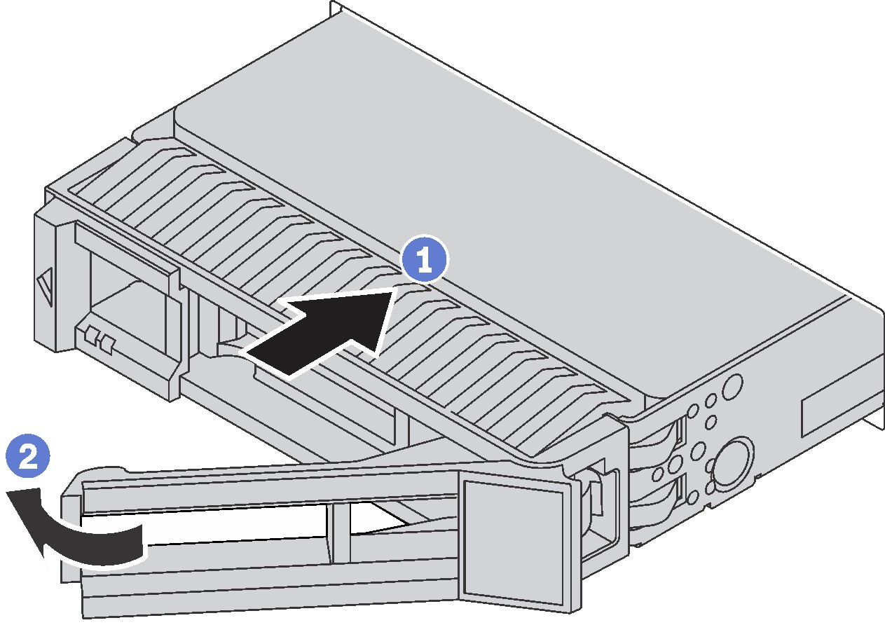

配图

图源：群晖《DS925+ 硬件安装指南》第 13 页，https://cndl.synology.cn/download/Document/Hardware/HIG/DiskStation/25-year/DS925+/chs/DS925p_HIG_chs.pdf；按图示方向拉出硬盘托架手柄，再把托架从槽中抽出。

图源：同上，第 16 页；装载好的托盘插入空槽，向后推直到听到锁定到位的咔哒声；再用托盘钥匙顺时针转到「I」位置锁定把手。指南注明：托盘必须完全插入，否则硬盘可能无法正常工作。

图源：联想 ThinkSystem SR630《安装热插拔硬盘》，https://pubs.lenovo.com/sr630/zh-CN/install_a_hotswap_drive；步骤 1 将硬盘滑入插槽直至咔嗒固定，步骤 2 合上硬盘托盘手柄将硬盘锁定到位。
结构原理
本节所有数字只写来源里给出的；来源没有就写「来源未给出」，不估算、不换算成看似精确的值。
堆叠方案
按「从机箱外到机箱内」写，安装方向是托盘沿导轨由前向后推入。
| 层级 | 零件 | 材料 | 厚度/尺寸 | 固定方式 | 依据 |
|---|---|---|---|---|---|
| L1（最外） | 前方面板与托架手柄（群晖另有硬盘托盘锁和钥匙） | 未注明 | 来源未给出 | 拉出/合上手柄；群晖用钥匙顺时针转到「I」锁定把手 | 群晖 DS925+ 指南 2.4 节第 1、3、4 步；联想 SR630 安装步骤 |
| L2 | 硬盘托架（群晖备件名：硬盘托架，类型 D9） | 未注明 | 来源未给出托架外形尺寸；兼容 3.5"/2.5" SATA（群晖） | 3.5 英寸：侧面固定面板插入托架；2.5 英寸：托架背面螺钉固定 | 群晖 1.6 备件、2.4 节安装步骤及插图 |
| L3 | 硬盘（HDD 或 SSD） | 未注明 | 群晖：3.5"/2.5" SATA；联想 SR630：SAS/SATA 硬盘、SAS/SATA 固态硬盘、NVMe 固态硬盘（以该型号说明为准） | 被托架侧板或螺钉保持，随托盘一起运动 | 群晖 1.5 硬件规格、2.4 节；联想 SR630 安装页「服务器支持的硬盘类型」 |
| L4（最内） | 硬盘背板或中面板上的连接器 | 未注明 | 来源未给出连接器型号、针数或行程 | 托盘完全推入后，硬盘接口与背板/中面板盲插对接 | 群晖故障排除「检查 HDD 背板上的电源和连接器是否正确插入」；联想 DM 页「凸轮手柄……中面板」 |
剖面示意：
flowchart LR 手柄["L1 前手柄 / 释放滑锁"] --> 托架["L2 托架本体"] 托架 --> 硬盘["L3 硬盘"] 硬盘 -->|"完全推入后盲插"| 背板["L4 背板或中面板连接器"]
零件清单
| 零件 | 数量 | 功能 | 材料 | 依据 |
|---|---|---|---|---|
| 硬盘托架（类型 D9，带锁） | 来源未给出整机配备数量；备件按只更换 | 承载硬盘、提供前手柄与导向 | 未注明 | 群晖 1.6 备件：「3.5"/2.5" 带锁硬盘托架」 |
| 托架手柄 | 每只托架 1 个（按插图） | 抽出与锁止托盘 | 未注明 | 群晖 2.4 节；联想 SR630 安装/卸下页 |
| 释放滑锁 | 来源未给出（联想 SR630 写「向左滑动释放滑锁以打开硬盘托盘手柄」） | 打开托盘手柄 | 未注明 | 联想 SR630 卸下页步骤 1 |
| 侧面固定面板 | 3.5 英寸安装时左右侧使用；2.5 英寸时指南要求从左侧移除并妥善存放 | 把 3.5 英寸硬盘固定在托架里 | 未注明 | 群晖 2.4 节第 2 步 |
| 2.5 英寸硬盘螺丝 | 包装内容写「2.5" 硬盘螺丝 x 18」；单只托架用量来源正文未给出，官方插图用 f 标出 4 处螺钉位置 | 从托架背面把 2.5 英寸硬盘拧紧 | 未注明 | 群晖 1.1 包装内容、2.4 节第 2 步及第 15 页插图 |
| 硬盘托盘钥匙 | 包装内容写 x 2 | 插入托盘锁，顺时针转到「I」锁定把手 | 未注明 | 群晖 1.1 包装内容、1.2 一览「硬盘托盘锁」、2.4 节第 4 步 |
| 硬盘填充件 | 来源未给出数量 | 空槽时遮盖插槽，维持散热 | 未注明 | 联想 SR630：卸下后「安装硬盘填充件或新硬盘」；空槽运行不超过两分钟 |
| 背板 / 中面板连接器 | 来源未给出 | 与硬盘接口盲插，传输电源和数据 | 未注明 | 群晖故障排除；联想 DM 页称「中面板」 |
装配顺序
按群晖 DS925+ 指南 2.4 节（安装顺序原文）：
- 按图示方向拉出硬盘托架手柄，把空托架从槽中取出。
- 把硬盘装入托架：3.5 英寸先从侧面取下固定面板，放入硬盘后再插入固定面板；2.5 英寸先取下左侧固定面板并保存，把硬盘放到指定区域，翻转托架后拧紧螺钉。
- 将装载好的托盘插入空槽，向后推直到听到托盘锁定到位的咔哒声。指南强调必须完全插入，否则硬盘可能无法正常工作。
- 把硬盘托盘钥匙插入托盘锁，顺时针转到「I」位置锁定把手，然后取出钥匙。
- 按同样步骤安装其余硬盘。
按联想 ThinkSystem SR630 安装页（与群晖同属「手柄打开再推入、合上手柄锁定」，但释放件和热插拔限制不同）：
- 先从插槽卸下硬盘填充件并妥善保管。
- 确保硬盘托盘手柄处于打开位置，将硬盘滑入插槽，直至咔嗒一声固定到位。
- 合上硬盘托盘手柄，将硬盘锁定到位。
- 查看硬盘状态 LED：黄色状态 LED 持续点亮表示硬盘故障须更换；绿色活动 LED 闪烁表示正在访问该硬盘。
卸下（联想 SR630）：向左滑动释放滑锁以打开托盘手柄，握住把手把硬盘从插槽中滑出。指南要求：空槽不要让服务器运行超过两分钟。
联想 DM3000H/DM5000F/DM5000H 中文页对同一机构下另一种前手柄写法更具体（不另计独立来源）：按硬盘表面上的释放按钮后，「硬盘弹簧上的凸轮手柄将部分打开，而硬盘将与中面板脱离」；把凸轮手柄拉到完全打开位置，再抽出硬盘；装回时手柄保持打开，推到停住后「合上凸轮手柄以使硬盘在中面板中完全就位，且手柄『咔嗒』一声锁定到位」，并要求缓慢合上、使手柄与硬盘表面正确对齐。该页还写：卸下故障硬盘后等待一分钟再插入替换硬盘；必须用双手，但不要把手放在托架下方露出的硬盘板上。
群晖指南写「只有特定的 Synology NAS 支持组件的热插拔，并设计为在开启时安全运行」，以及「更换热插拔硬盘时，请尽快安装新的热插拔硬盘」。指南没有给出「尽快」的分钟数。带电更换只按各来源自己的条件执行，不把联想的两分钟规则套到群晖上。
受力与运动分析
- 受力路径：抽出时，手力作用在前手柄上，经托架把硬盘一起沿导轨拉出，硬盘接口与背板/中面板分离。推入到位后，群晖用咔哒锁定加上可选钥匙锁保持把手；联想 SR630 用合上的托盘手柄把硬盘锁定到位。盲插对接力来自向后推入（群晖）或推入后再合上手柄（联想）；来源未给出插入力或保持力数值。
- 运动关系：托盘相对机箱槽主要是前后滑动；手柄相对托架转动或开合。联想 DM 页把这一开合称为凸轮手柄，并写明开到位时硬盘与中面板脱离、合上后在中面板中完全就位。没有来源给出凸轮升程或转角。
- 失效风险：群晖写明托盘未完全插入时硬盘可能无法正常工作，故障排除还要求目视检查硬盘连接器是否损坏或弯曲，并检查背板上的电源和连接器是否正确插入。联想 SR630 写空槽运行超过两分钟会影响充分散热。推断（来源未直接测力）：如果手柄未锁到位，振动中托盘可能后退，接口接触不可靠。
设计要点与参数
| 要点 | 内容 | 依据 |
|---|---|---|
| 托架类型 | 群晖备件：硬盘托架（类型 D9），3.5"/2.5" 带锁硬盘托架 | 群晖指南 1.6 备件 |
| 接口与盘型 | 群晖 DS925+：兼容 3.5"/2.5" SATA x 4，另有 M.2 2280 NVMe SSD x 2（M.2 不是本托架）。联想 SR630：SAS/SATA 硬盘、SAS/SATA 固态硬盘、NVMe 固态硬盘 | 群晖 1.5；联想 SR630 安装页 |
| 锁止动作 | 群晖：向后推到听到咔哒；再用钥匙顺时针转到「I」锁把手。联想 SR630：合上托盘手柄锁定。联想 DM：合上凸轮手柄，咔嗒锁定，硬盘在中面板完全就位 | 群晖 2.4；联想 SR630 安装页；联想 DM 热插拔页 |
| 释放动作 | 群晖：按图示拉出托架手柄。联想 SR630：向左滑动释放滑锁以打开手柄。联想 DM：按释放按钮，凸轮手柄部分打开并与中面板脱离 | 同上卸下/安装步骤 |
| 热插拔条件 | 群晖：只有特定型号支持，尽快装回新盘，具体分钟数来源未给出。联想 SR630：空槽运行不超过两分钟。联想 DM：可在系统保持开机时热插拔；更换多块时，卸下后须等待一分钟再插入下一块 | 群晖 2.2、系统可靠性指南；联想 SR630 注意；联想 DM「关于本任务」与步骤 6 注 |
| 整机外形（仅群晖该型号，不是托架尺寸） | DS925+ 尺寸（高 x 宽 x 深）：166 x 199 x 223 mm；重量 2.26 kg | 群晖 1.5 硬件规格 |
| 冷却空隙（整机，不是托架间隙） | 群晖要求前后留出大约 50 毫米（2 英寸）空隙 | 群晖系统可靠性指南 |
| 连接器针数、凸轮转角、插入力 | 来源未给出 | — |
优缺点
优点
- 硬盘作为前面板模块更换，不必打开上盖去拔内部线缆；背板或中面板负责盲插。
- 前手柄既是抽手，也是锁止件；联想 SR630 还用单独的释放滑锁防止误开。
- 群晖用侧板（3.5 英寸）或螺钉（2.5 英寸）把硬盘留在托架里，换盘时托架可重复使用；带锁把手可减少误拉。
- 来源给出了明确的空槽散热时限（联想 SR630 两分钟）和完全插入才可靠的警告（群晖）。
缺点 / 代价
- 必须为每只硬盘准备托架、机箱导轨和背板/中面板，结构件比线缆直连多。
- 未推到位或手柄未锁死时，接口可能接触不良；群晖已写明「无法正常工作」的后果。
- 不是所有机型都允许带电更换；群晖把热插拔限定为「特定」机型。
- 空槽会破坏原设计气流，服务器侧有明确的短时限。
可借鉴点
- 做带电可换模块时，把「导向推入 + 终点盲插 + 前手柄锁止」分成三件事写进检查表：导轨有没有让连接器对准；锁有没有把模块保持在完全插入位置；释放件会不会被误碰。
- 手柄打开再推入、推到位后再合上手柄（联想 SR630 / DM），比只靠手把模块「塞到头」更容易把最后一段插合走完。来源若写了「缓慢合上、对齐」，就不要设计成猛甩上锁。
- 空槽必须有填充件，并写清允许空置的最长时间；不要把某一家的两分钟或一分钟规则抄到未写时限的产品上。
- 需要防误拔时，可另加机械锁（群晖的托盘钥匙锁），它锁的是把手，不是替代背板插合。
- 不要和针顶出卡托或笔记本扩展舱混用同一套行程：本结构的终点是机内背板连接器。
与库中相似案例对比
| 对比项 | 本案例（热插拔硬盘托架） | Nano-SIM 针顶出托盘（Pin-eject）：外部顶针把客户自制托盘顶出 | Framework Laptop 16 Expansion Bay 滑出式显卡模块 | 电动工具电池包：滑轨插入与按压锁舌（得伟拆解） |
|---|---|---|---|---|
| 抽出方式 | 打开前手柄（或先滑开释放滑锁）后沿槽抽出托盘 | 外部顶针从针孔把托盘顶出 | 滑出笔记本扩展舱模块 | 按压锁舌后沿滑轨抽出电池包 |
| 电连接 | 硬盘接口与机内背板或中面板盲插；可热插拔的条件只看来源 | 托盘上的卡与卡座触点；该案例不是机柜背板，一般不按热插拔模块来设计 | 笔记本扩展接口，不是机柜硬盘背板 | 电池包电触点，不是 SATA/SAS/NVMe 背板 |
| 锁止 | 合上手柄咔哒锁定；群晖另可用钥匙锁把手 | 托盘在卡座内由卡座机构保持 | 扩展舱自己的保持结构，见该案例 | 按压锁舌 |
| 空位限制 | 联想 SR630：无硬盘或填充件时运行不超过两分钟 | 不适用 | 不适用本篇两分钟规则 | 不适用 |
| 分类取舍 | 放在 06：核心是整机前面板可换存储模块，而不只是一个卡扣 | 04，顶出机构 | 06，笔记本模块化扩展 | 04，电池包锁舌与滑轨 |
相关案例
- Nano-SIM 针顶出托盘（Pin-eject）：外部顶针把客户自制托盘顶出
- Framework Laptop 16 Expansion Bay 滑出式显卡模块
- 电动工具电池包：滑轨插入与按压锁舌（得伟拆解）
- SD 与 microSD 推推式卡座：心形槽滑块与卡片当撞销
- Mac Pro 2019 旋转把手外壳锁与免工具模块锁
- 分类索引：拆解与可维修
来源与核实记录
- 主来源：群晖 DS925+ 硬件安装指南（中文 PDF）（PDF 元数据创建时间 2025-03，打开时共 58 页；群晖。核对了包装内容、部件一览中的硬盘托盘锁、类型 D9 带锁托架、1.5 规格、2.2 节热插拔限定、2.4 节安装步骤与插图、故障排除中的 HDD 背板检查）
- 补充来源 1：联想 ThinkSystem SR630：卸下热插拔硬盘（联想 Docs 中文页。释放滑锁、托盘手柄、空槽不超过两分钟）
- 补充来源 2：联想 ThinkSystem SR630：安装热插拔硬盘（与上页同属联想。手柄打开推入至咔嗒、合上手柄锁定、支持的硬盘类型与 LED）
- 补充来源 3：联想 DM3000H、DM5000F、DM5000H：对内部硬盘进行热插拔（同属联想，不另计机构。凸轮手柄、中面板脱离/就位、等待一分钟、双手操作）
- 核实：2026-11-22 下载群晖 PDF 并抽出第 13–16 页插图；打开联想 SR630 卸下/安装页并下载官方插图；打开联想 DM 热插拔页。华为企业文档在本环境返回 403，未写入正文。超微机箱手册 PDF 同样 403，未引用。